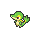
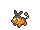

Os Iniciais de Unova
Poderosos, Brutais e Bonitos
Atualizado em 26/Abril/2022
Tsutarja é um Pokémon baseado numa cobra-cipó. Ele e suas evoluções são apenas do tipo Grama, e ao longo de suas evoluções ele vai perdendo seus membros. Janovy possui pernas e braços bem pequenos, mas mesmo assim é um Pokémon bastante rápido. Ele costuma se esconder nas folhagens espessas para evitar ataques do seu oponente. Sua evolução, Jalorda, só ataca seu oponente com força total quando ele não se incomoda com seu olhar penetrante.
Pokabu é o inicial do tipo Fogo, e pra variar, ganha o tipo Lutador ao evoluir. De uma aparência fofa e indefesa, Tepig se torna o forte Chaoboo, que passa a ser um porco bípede e possui fogo em seu estômago. Enbuoh, seu último estágio, é ainda mais assustador. Ele usa sua força e velocidade para atacar seus oponentes com ataques de mestre de luta. Porém, ele também pode cuspir fogo em seus alvos.
 Mijumaru é o inicial lontra marinha do tipo Água. Ele carrega uma concha chamada Scalchop e a usa para atacar seus oponentes e cortar berries. Sua evolução Futachimaru possui duas Scalchops presas em sua perna, e assim como Mijumaru, as usa para atacar seu alvo. Por fim, Daikenki, a última evolução do Mijumaru, perde suas Scalchop, ele acaba ganhando duas Seamitars, que as usa como numa batalha de espadas.
Mijumaru é o inicial lontra marinha do tipo Água. Ele carrega uma concha chamada Scalchop e a usa para atacar seus oponentes e cortar berries. Sua evolução Futachimaru possui duas Scalchops presas em sua perna, e assim como Mijumaru, as usa para atacar seu alvo. Por fim, Daikenki, a última evolução do Mijumaru, perde suas Scalchop, ele acaba ganhando duas Seamitars, que as usa como numa batalha de espadas.
Abaixo você pode clicar na pokebola de sua escolha para ver e saber um pouco mais sobre essas criaturinhas que se destacaram pelo seu design e carisma: